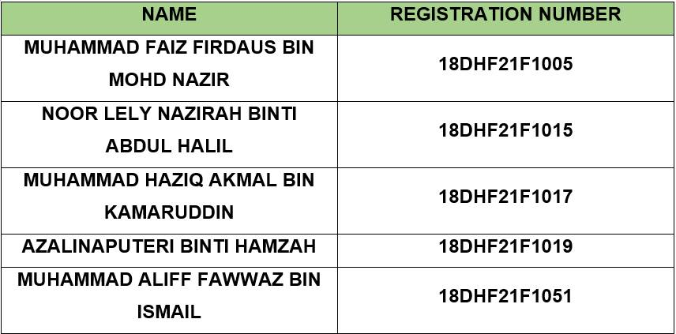

Disclaimer all menu in the picture might different from actual product


DIPLOMA HALAL FOODSERVICE DTF30052 MENU PLANNING AND DESIGN ASSIGNMENT: Arab Cuisine Restaurant TOPIC 4: FOODSERVICE MENU TOPIC 6: WRITING, DESIGNING AND MERCHANDISING MENU SUPERVISED BY: MADAM ROZILAWATI BINTI SHAARI PREPARED BY:
Sahn Talam is a restaurant serve Arabic cuisine and was build with Arabic style as the theme. Sahn Talam serve food for those who seeks Arabic cuisine. We Sahn Talam aim our sale for those who dine in group such as family group, party group or business group. In addition to our menu, pricing and costing will we adjust to make it more affordable, so more people could enjoy our cuisine at more enjoyable yet not intimidate price. Furthermore, to our Arabic menu, we aim to conquer and dominate the Arabic restaurant market in Malaysia and to become the famous Arab Restaurant in Malaysia starting by conquering Northern Malaysia region which is Kedah, Perlis, Pulau Pinang and Kelantan. Last but not least, we Sahn Talam Restaurant intend to make our cuisine irresistible and for who haven't tried it will definitely crave it. None then less will try our best to make our menu fresh and stay relevant implementing trend and demand into it.
1. Toilet
In Sahn Talam Restaurant it has a toilet that have been provided for customer that come to this restaurant.
The toilets are separated between men's and women's toilets.
2. Air conditioner
The air conditioner have been also provided to maximize the customer for their pleasure when eating their
meals at this restaurant and make them feel more comfortable when eating at this restaurant.

3. Prayer room
Sahn Talam Restaurant also have provided prayer rooms for all muslim people that come to this place.

4. Sink
Sahn Talam Restaurant also have provided a sink for every customer to wash their hands after eating their foods.
Location
To begin with, we chose Laguna Merbok in Sungai Petani, Kedah as the place where our restaurant operates
because this place is strategic for business dealings, especially restaurant business. This is because it
is close to urban areas. This is because, urban areas are easier to attract more customers.

sahntalamrestaurant

Sahn Talam Restaurant

sahn_talam

019 - 621 7558 / 017 - 404 1650

sahntalamrestaurant@gmail.com